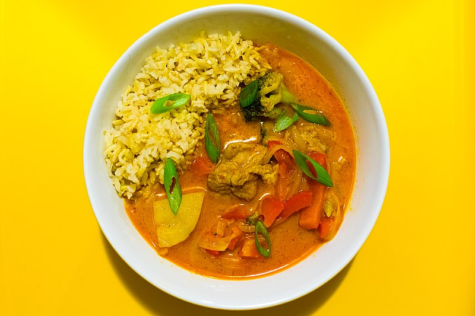

Thai Red Curry

Description
Thai Red Curry is one of my favorite dishes to cook. It is simple to make, and delicious. You can make this recipe with chicken, but today I am highlighting an excellent vegetarian version of Thai Red Curry.
The recipe takes under an hour to make, which for me makes it a great candidate for a weeknight dinner. The recipe is inspired by Cookie & Kate's version, which has always yielded delicious results.
Ingredients
- 1 1/4 cups long-grain rice
- 1 tablespoon vegetable oil
- 1 small white onion, diced
- 1/4 teaspoon salt
- 1/4 teaspoon ginger powder
- 2 cloves garlic, minced
- 1-2 sliced bell peppers; red, orange, or yellow
- 3 carrots, thinly sliced
- 2 tablespoons Thai red curry paste
- 1 can (14 ounces) coconut milk
- 1/2 cup water
- 1 tablespoon soy sauce
- 2 teaspoons rice vinegar
Steps
For the rice:
- Boil water in a large pot. Add the rinsed rice and continue boiling for 30 minutes. Remove from heat, drain the rice and return the rice to pot. Cover and let the rice rest for 10 minutes or longer, until you're ready to serve. Just before serving, season the rice to taste with salt and fluff with a fork.
For the curry:
- Warm a large skillet (I like to use a Dutch Oven) over medium heat. Add the vegetable oil. Add the onion and some salt and cook, stirring often, for about five minutes. Add the ginger and garlic and cook for 30 to 60 seconds, while stirring constantly.
- Add bell peppers and carrots. Cook for about three to five minutes, stirring as needed.
- Add curry paste and cook for 2 minutes, stirring often.
- Add coconut milk and water. Stir to combine. Bring to a simmer over medium heat. Once it reaches a simmer, reduce heat as needed to maintain a gentle simmer. Cook until the peppers and carrots have softened to your liking, about five to ten minutes, stirring occasionally.
- Remove the pot from heat and season with soy sauce and rice vinegar. Add salt to taste.